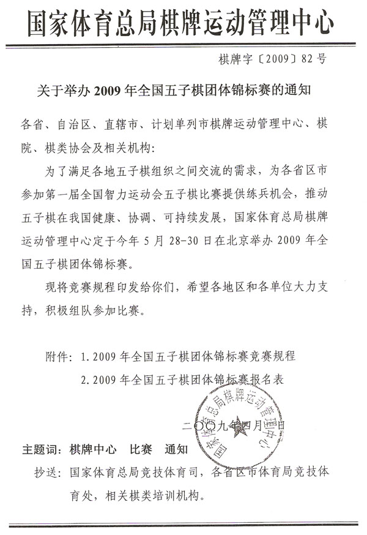
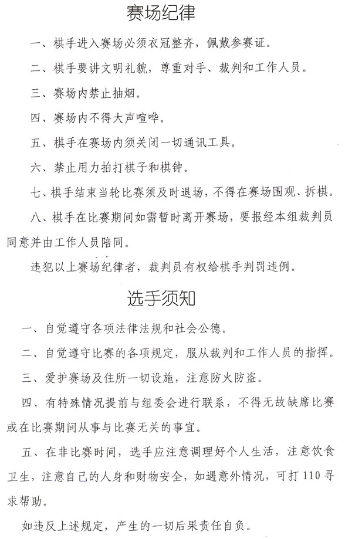
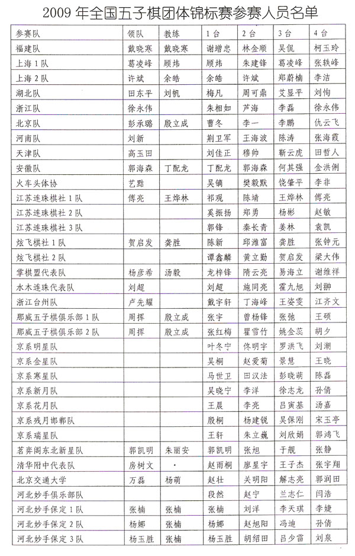

第三届全国五子棋团体锦标赛秩序册
首页
五子棋新闻
#1 第三届全国五子棋团体锦标赛秩序册 作者：无尽 发表时间：2009-5-27 22:41:25







#2 Re:第三届全国五子棋团体锦标赛秩序册 作者：nara 发表时间：2009-5-28 10:33:42
这个手册上好像连用什么规则都没说吗？难道我看漏了？
#3 Re:第三届全国五子棋团体锦标赛秩序册 作者：无尽 发表时间：2009-5-28 10:37:08
五 （二） 有说明
#4 Re:第三届全国五子棋团体锦标赛秩序册 作者：丝袜伯爵 发表时间：2009-5-28 10:38:32
怎么没看到李洪斌呢
#5 Re:第三届全国五子棋团体锦标赛秩序册 作者：刀魂 发表时间：2009-5-28 12:28:40
祝：选手杀出好成绩，杀出精彩对局
#6 Re:第三届全国五子棋团体锦标赛秩序册 作者：nara 发表时间：2009-5-28 13:04:06
中国五子棋竞赛规则是哪个规则啊？不是很了解！
#7 Re:第三届全国五子棋团体锦标赛秩序册 作者：有志青年 发表时间：2009-5-28 14:18:01
中国五子棋竞赛规则
ShowPost.asp?ThreadID=109